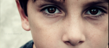

Ayudanos
Colabora con nosotros
Probablemente la mejor manera de colaborar es conociendo del tema y compartir el conocimiento. Para ello podés empezar leyendo algunos de estos artículos en Internet y por su puesto, si tenés alguna consulta, no dudes en contactarnos.
Autismo
El Autismo es una síndrome genético, que consta en el trastorno psicológico que se caracteriza por la intensa concentración...
Leer más
Asperger
Las características esenciales del trastorno de Asperger es una alteración grave y persistente de la interacción...
Leer más

Leer más
Qué es TGD
Esta categoría debe utilizarse cuando existe una alteración grave y generalizada del desarrollo de la interacción social recíproca...
Leer más
Síndrome de Rett
El síndrome de Rett es un trastorno en el desarrollo neurológico de base genética. Fue descrito en 1966 por el doctor Andreas Rett...
Leer más